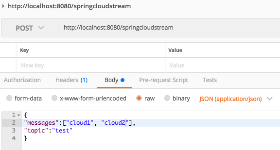
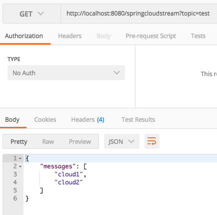

Kafka
Do It Yourself
Hi, my name is Tom.
Developer
Ordina Belgium
@tomvdbulck
https://github.com/tomvdbulck
Agenda
- What is Streaming
- Spring Cloud Stream
- Apache Spark
- Apache Flink
- Kafka Streams
Streaming
Kafka

Kafka: Design Goals
High volume publish-subscribe message and streams
Durable
Fast
Scalable
Kafka: Dumb Brokers
Smart Consumers
Retains all messages
Spring Cloud Stream
- Zookeeper
- Broker
- Controller
- Topics
- Partitions
- Replication
- Producers
- Consumers
- Consumer offset
- Failover
Zookeeper
Zookeeper: Why does Kafka Need it
- Electing a Controller
- Cluster Membership
- Topic Configuration
- Quotas
- ACL: Who is allowed to read and write
Brokers
Node, Broker, Kafka Server => all the same
Hosts topics
Stores messages
The Controller
Manage State of Partitions and Replicas
Reassign Partitions
Topics
Virtual Group of partitions
Producers write messages.
Consumes read messages.
Partitions
Topics are split in partitions.
1 broker is leader.
Used to scale.
Partitions: Rebalancing
auto.leader.rebalance.enable: true (default)
also manual rebalancing possible
Replication
Fail-Over.
Each broker: Maintains list of In Sync Replicas.
Brokers with replicas only keep these in sync with the Partition Master.
Replication: They all die.
Wait for an ISR replica to come back
Or
choose the first replica which comes back.
Replication: Acknowledgement
Choose for acknowledgement by 0, 1 or all (ISR) Replicas.
Only for producers.
Extra options:
Disable unclean leader election.
Minimum ISR size.
Producers
Push messages into Kafka Topics.
Can provide partition key.
Message gets forwarded to the leader.
Messages / Records
Unique offset within partition.
Remain until TTL or after compaction.
- key
- value
- timestamp
Consumers
Reads messages from a specific offset.
Asks for messages - pull, as not to overload.
Can only read messages which are fully in sync.
Consumer Offset
Stored in Kafka. (previously Zookeeper)
Exactly once: read and commit offset in transaction
The consumer can change this offset.
Consumer Groups
1 partition can be read by 1 consumer of the group. parallel processing.
Hands On
https://github.com/tomvdbulck/kafka-handson-workshop
Hands On: Agenda
- Docker
- Postman
- RabbitMQ
- The application
- DIY: Native
- DIY: Reactor
- DIY: Spring Cloud Stream
- DIY: Bunny Time

> docker build -t kafka-zookeeper .
> docker run --name kafka-zookeeper -e ADVERTISED_HOST=localhost -e ADVERTISED_PORT=9092 -i -t -p 2181:2181 -p 9092:9092 kafka-zookeeper
Install Postman: https://www.getpostman.com/
Import the collection: kafka-workshop.postman_collection.json.
https://www.rabbitmq.com/download.html

Go to http://localhost:15672/
Use: guest/guest (super safe)
Verify if the port config in application.yml corresponds.
The Application
Simple REST controllers
Postman is used to send the calls - looks good enough
DIY: Native

DIY: Native

DIY: Reactor

DIY: Reactor

DIY: Spring Cloud Stream
DIY: Spring Cloud Stream
DIY: Bunny Time

DIY: Bunny Time

switch to RabbitMQ: set defaultCandidate of rabbit to true
Questions ?
Thanks for watching!
Now kick some ass!